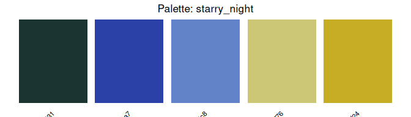
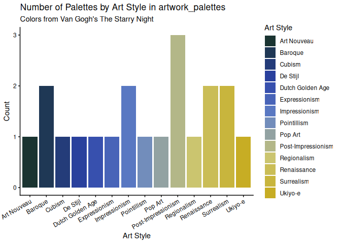

The goal of aRtpalette is to make it easy to bring art-inspired color palettes into R-based data visualizations. The package lets you store palettes as structured objects, preview them as color swatches, and expand them when a chart needs more colors than the source artwork provides.
The inspiration for this package came from the frustration of having to use the colors from paintings in my ggplot2 charts, but there was no clean workflow for doing so in R. As I used R, I had to manually copy hex codes and hope the colors looked right once applied. I wanted a tool that treated color as data, something you could store in a table, validate, visualize, and manipulate programmatically.
Installation
You can install the development version of artpalette from GitHub with:
# Option 1: using devtools
# install.packages("devtools")
devtools::install_github("ADC-405-S26/aRtpalette")
# Option 2: using pak
# install.packages("pak")
pak::pak("ADC-405-S26/aRtpalette")The built-in dataset
The package includes artwork_palettes, a table of 20 color palettes extracted from iconic artworks across art history. Each row is one painting, with five hex color codes and metadata including the artist, artwork title, and art movement.
library(aRtpalette)
library(ggplot2)
data(artwork_palettes)
head(artwork_palettes[, c("palette_name", "artist", "style", "hex1", "hex2", "hex3")])
#> palette_name artist style hex1 hex2 hex3
#> 1 starry_night Van Gogh Post-Impressionism #1a3431 #2b41a7 #6283c8
#> 2 bedroom_arles Van Gogh Post-Impressionism #374D8D #93A0CB #82A866
#> 3 self_portrait_hat Van Gogh Post-Impressionism #FBDC30 #A7A651 #E0BA7A
#> 4 great_wave Hokusai Ukiyo-e #1F284C #2D4472 #6E6352
#> 5 water_lilies Monet Impressionism #9F4640 #4885A4 #395A92
#> 6 woman_parasol Monet Impressionism #82A4BC #4C7899 #2F5136Core functions
palette_from_hex() — store colors as a validated object
row <- artwork_palettes[artwork_palettes$palette_name == "starry_night", ]
starry_night <- palette_from_hex(
hex_codes = c(row$hex1, row$hex2, row$hex3, row$hex4, row$hex5),
name = "starry_night"
)
starry_night
#> $name
#> [1] "starry_night"
#>
#> $colors
#> [1] "#1a3431" "#2b41a7" "#6283c8" "#ccc776" "#c7ad24"
#>
#> attr(,"class")
#> [1] "artpalette"The function validates every hex code on input and returns a clear error message if any is malformed. So problems surface immediately rather than silently breaking a chart later.
plot_palette() — preview before you apply
plot_palette(starry_night)
Seeing the palette as swatches before applying it to real data saves the back-and-forth of guessing whether the colors will work together.
apply_palette() — expand for any chart size
# Exactly 3 colors for a 3-group chart
apply_palette(starry_night, n = 3)
#> [1] "#1A3431" "#6283C8" "#C7AD24"
# Expand to 8 colors via interpolation
apply_palette(starry_night, n = 8)
#> [1] "#1A3431" "#233B74" "#324AAB" "#5270BE" "#8096B0" "#BCBD81" "#C9BB52"
#> [8] "#C7AD24"If you ask for more colors than the palette contains, the function interpolates between the existing colors, allowing you to take the original color and expand it creatively for any chart size.
A full workflow example
# Count palettes by art style using our own dataset
style_counts <- as.data.frame(table(artwork_palettes$style))
colnames(style_counts) <- c("style", "count")
chart_colors <- apply_palette(starry_night, n = nrow(style_counts))
ggplot(style_counts, aes(x = style, y = count, fill = style)) +
geom_bar(stat = "identity") +
scale_fill_manual(values = chart_colors, name = "Art Style") +
labs(
title = "Number of Palettes by Art Style in artwork_palettes",
subtitle = "Colors from Van Gogh's The Starry Night",
x = "Art Style",
y = "Count"
) +
theme_classic() +
theme(axis.text.x = element_text(angle = 30, hjust = 1))
Learn more
See the full vignette for a detailed walkthrough including palette comparison across art movements, the complete art analysis workflow, and more ggplot2 examples:
vignette("getting-started-with-aRtpalette")